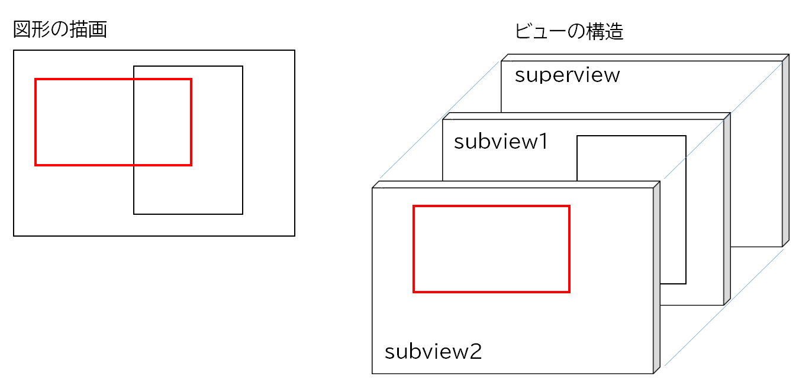
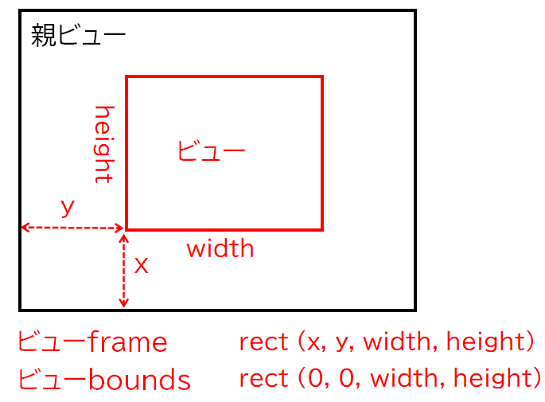

Core Graphicsを使用した簡単な図形描画ツール

Core Graphicsは低レベルの描画ツールである。ビューのGraphicsコンテキストの対し CGContex関数を使って図形を直接描画するものである。
本アプリケーションでは、一つの図形は一つのビューに描画し、それをキャンバスに相当する親ビューに追加していく。図形を描画するビューは親ビューと同じ大きさとし重なるようにする。これによりマウス操作により指定された親ビューベースの図形の座標は、図形を描画する子ビューの座標と一致する。
一つの矩形を表示する UAShapeItemクラス
図形の描き方
NSViewクラスの drawRectメソッドをオーバーライドする。グラフィックコンテキストを取得し、CGContext関数により、指定された位置と大きさの矩形を指定された太さと色の線で描画している。
図形の表示と消去
図形を表示するには描画したビューを親ビューに追加する。
図形を消去するには、追加したビューを削除する。
frameプロパティとboundsプロパティ
あるビューのframeプロパティとboundsプロパティは下記の図に示したようになる。frameプロパティの原点は親ビューとの位置関係により決まる。

本アプリケーションでは、親ビューに貼り付ける子ビューを生成するとき、frameは親ビューのboundsに合わせること。
親ビューのframeの原点は、その親ビューにあたるコンテントビューとの相対位置になるので、親ビューがコンテントビューと重なっていない場合、親ビューframeの原点を使ってしまうと、その差だけズレが生じてくる。